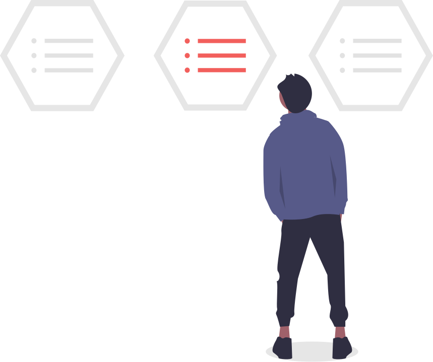

O que fazemos
A Conatus surge com o objetivo de desenvolver o potencial de jovens em situação de vulnerabilidade social. Queremos contribuir na ascensão profissional de jovens que estão ou recém sairam do ensino médio, através do estímulo a descoberta de talentos, capacitação para o mercado de trabalho e encaminhamento para vagas de emprego.
Guia de aprendizagem
Trilhas de conhecimento

São oferecidas algumas trilhas de habilidades técnicas e comportamentais necessárias em algumas áreas de atuação. Essa jornada é composta de vídeo aulas, textos, indicações de livros e exercícios para o aprimoramento dos conhecimentos. Muitos dos conteúdos
aqui indicados não são autorais, mas são conteúdos que profissionais das respectivas áreas consideram extremamente relevantes.
Saiba mais
Vagas
Uma primeira oportunidade
Na área de vagas será possível encontrar vagas e empresas com processo seletivo aberto que se encaixam no perfil do nosso público alvo. Além de vagas direcionadas para minorias como PCD, mulheres, negros e LGBT+. Teremos também um espaço para cadastro de vagas de empresas parceiras.
Saiba mais
Feed personalizado
Novidades, notícias e dicas

Ao se cadastrar e acessar a plataforma com seu e-mail e senha, você será levado ao nosso feed! disponibilizaremos dicas de profissionais de recrutamento e empresas sobre como se preparar para as diferentes etapas de um processo seletivo, artigos sobre tecnologias e ferramentas importantes para o mercado de trabalho, novidades sobre cursos e formações com inscrições abertas e etc.
Saiba mais
Mentorias (Em breve)
Mentores especialistas
A mentoria tem como objetivo auxiliar o jovem a conquistar seus objetivos profissionais através de conselhos baseado em nossa experiência profissional do mentor. Durante esse processo é traçado o caminho mais promissor para o crescimento pessoal e profissional do mentorado ou da mentorada, além da realização de um acompanhamento constante dessa trajetória.
Saiba mais